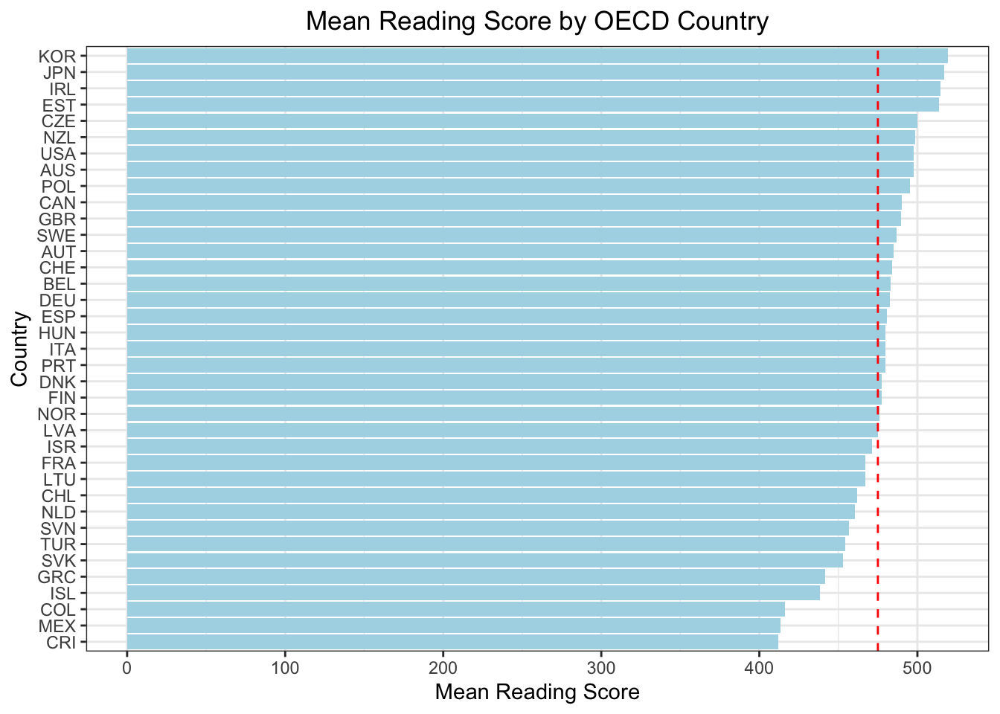

Top Scorers of OECD Countries: Two Far Eastern countries, Korea and Japan, and three Eastern Europe countries, Estonia, Poland and Czech Republic, are outstanding in terms of mean scores of all three subject.
Not The Best As Expected in OECD Countries: Finland, the country of which the education model is taken as a role model, has a mediocre performance. The most advanced countries like Germany, France and USA have again a mediocre performance.
Lack of teaching staff: If schools have ‘no’ or ‘a lot of staff missing teaching mathematics’, then their students’ performance in mathematics drops. If schools have a moderate number of missing (‘very little’ and ‘to some extent’) students’ performance in mathematics is not affected much.
Professional Development: Does your school offer professional development to mathematics teachers in any of the following? It seems there is no difference in students’ mathematical performance whether their school provides or does not professional development to the teachers.
Is your school a public or a private school? Answer to this question: In general, the school type does not matter much in students’ performance in PISA 2022.
Specifically in Turkey, we checked whether school type mattered in terms of frequency of high achievers: interestingly, the number of high achievers coming from X schools are a lot higher than Y type of schools. Outliers for high achieving students are usually from X schools….
3.2 Package Installation and Data Summary:
### Step 1: import librarieslibrary(tidyverse)
── Attaching core tidyverse packages ──────────────────────── tidyverse 2.0.0 ──
✔ dplyr 1.1.3 ✔ readr 2.1.4
✔ forcats 1.0.0 ✔ stringr 1.5.0
✔ ggplot2 3.4.4 ✔ tibble 3.2.1
✔ lubridate 1.9.3 ✔ tidyr 1.3.0
✔ purrr 1.0.2
── Conflicts ────────────────────────────────────────── tidyverse_conflicts() ──
✖ dplyr::filter() masks stats::filter()
✖ dplyr::lag() masks stats::lag()
ℹ Use the conflicted package (<http://conflicted.r-lib.org/>) to force all conflicts to become errors
library(dplyr)library(ggplot2)library(scales)
Attaching package: 'scales'
The following object is masked from 'package:purrr':
discard
The following object is masked from 'package:readr':
col_factor
# drop x columnpisa <- pisa %>%select(-X)# check summary#summary(pisa)#sapply(pisa, function(x) sum(is.na(x)))# check the data#str(pisa)#length(pisa)
3.3 Mean Of Math, Read and Science Scores By OECD Countries:
Sums and means of PV scores for each subject and each row are summarised as additional columns:
# Step 3: EDA# calculate the PV1MATH+PV2MATH+PV3MATH+PV4MATH+PV5MATH+PV6MATH+PV7MATH+PV8MATH+PV9MATH+PV10MATH and save it as a new column# get the column names of the math scores avg#colnames(pisa)[5:14]pisa$SUMMATH <-rowSums(pisa[, 5:14], na.rm =TRUE)pisa$mean_math <-rowMeans(pisa[, 5:14], na.rm =TRUE)#calculate mean mat# get READ scores columns#colnames(pisa)[15:24]# calculate the SCI score and save it as a new columnpisa$SUMREAD <-rowSums(pisa[, 15:24], na.rm =TRUE)pisa$mean_read <-rowMeans(pisa[, 15:24], na.rm =TRUE)# get SCI scores columns#colnames(pisa)[25:34]# calculate the SCI score and save it as a new columnpisa$SUMSCI <-rowSums(pisa[, 25:34], na.rm =TRUE)pisa$mean_sci <-rowMeans(pisa[, 25:34], na.rm =TRUE)
Mean column is grouped by OECD countries for each subject:
# caluculate the mean of the math, read and sci scores by OECD countrypisa_mean <- pisa %>%filter(OECD_x ==1) %>%group_by(CNT) %>%summarise(mean_math =mean(mean_math, na.rm =TRUE),mean_read =mean(mean_read, na.rm =TRUE),mean_sci =mean(mean_sci, na.rm =TRUE))
Below is mean math score by OECD country:
# sort the data by mean_mathpisa_mean <- pisa_mean %>%arrange(desc(mean_math))# visualize the data by mean_mathggplot(pisa_mean, aes(x =reorder(CNT, mean_math), y = mean_math)) +geom_bar(stat ="identity", fill ="darkblue") +coord_flip() +labs(title ="Mean Math Score by OECD Country",x ="Country",y ="Mean Math Score") +theme_bw() +theme(plot.title =element_text(hjust =0.5))
..and below is the representation of mean science and read scores by OECD countries:
# sort the data by sci scorepisa_mean <- pisa_mean %>%arrange(desc(mean_sci))# visualize the data by mean_sciggplot(pisa_mean, aes(x =reorder(CNT, mean_sci), y = mean_sci)) +geom_bar(stat ="identity", fill ="steelblue") +coord_flip() +labs(title ="Mean Science Score by OECD Country",x ="Country",y ="Mean Science Score") +theme_bw() +theme(plot.title =element_text(hjust =0.5))
# sort the data by read scorepisa_mean <- pisa_mean %>%arrange(desc(mean_read))# visualize the data by mean_readggplot(pisa_mean, aes(x =reorder(CNT, mean_read), y = mean_read)) +geom_bar(stat ="identity", fill ="lightblue") +coord_flip() +labs(title ="Mean Reading Score by OECD Country",x ="Country",y ="Mean Reading Score") +theme_bw() +theme(plot.title =element_text(hjust =0.5))

Korea, Japan, Estonia and Czech Republic are part of top 5 in all of the subjects.
While Finland education method is promoted as the best, the scores of this country is mediocre among the OECD countries.
Turkey is among the last 5 out of OECD countries in all three subjects, together with Greece, Colombia and Mexico.
3.4 Mean Of Math, Read and Science Scores by Lack Of Teaching Stuff:
# SC017Q01NA Instruction hindered by: A lack of teaching staff #Not at all # Very little # To some extent # A lot#pisa$SC017Q01NA# group by SC017Q01NA calculate mean math score , mean read score and mean sci scorepisa_lack_of_teaching_staff <- pisa %>%group_by(SC017Q01NA) %>%summarise(mean_math =mean(mean_math, na.rm =TRUE),mean_read =mean(mean_read, na.rm =TRUE),mean_sci =mean(mean_sci, na.rm =TRUE)) pisa_lack_of_teaching_staff <- pisa_lack_of_teaching_staff %>%filter(!is.na(SC017Q01NA))# line plotpisa_lack_of_teaching_staff %>%gather(key ="subject", value ="score", mean_math, mean_read, mean_sci) %>%ggplot(aes(x = SC017Q01NA, y = score, fill = subject)) +geom_bar(position ="dodge", stat="identity") +labs(title ="Mean Math, Reading and Science Score by Lack of Teaching Staff", x ="Lack of Teaching Staff",y ="Mean Score") +facet_grid(. ~ subject) +theme_bw() +theme(plot.title =element_text(hjust =0.5)) +theme(legend.position ="none")
When there is no lack of teaching staff, the mean scores in all three subjects are interestingly lower than the cases where there is very little to some extent lack of staff. On the other hand, the mean score decreases again when there is serious lack of teaching staff as we would expect.
3.5 Mean Math Score By Professional Development Provided To Teaching Staff:
# SC184*** mean math score, mean read score and mean sci score "Does your school offer professional development to# mathematics teachers in any of the following?#pisa$SC184Q01JA # 1Yes 2No# set 1 as yes and 2 as nopisa_SC184Q01JA <- pisa %>%mutate(SC184Q01JA =ifelse(SC184Q01JA ==1, "Yes", "No"))# drp the NApisa_SC184Q01JA <- pisa_SC184Q01JA %>%filter(!is.na(SC184Q01JA))professional_development_to_mathematics_teachers <- pisa_SC184Q01JA %>%group_by(SC184Q01JA) %>%summarise(mean_math =mean(mean_math, na.rm =TRUE))# line plot normalize the dataggplot(professional_development_to_mathematics_teachers, aes(x = SC184Q01JA, y = mean_math)) +geom_bar(stat ="identity", fill ="steelblue") +labs(title ="Mean Math Score by Professional Development to Mathematics Teachers",x ="Professional Development to Mathematics Teachers",y ="Mean Math Score") +theme_bw() +theme(plot.title =element_text(hjust =0.5))
#pisa_SC184Q01JA$SC184Q01JA
The score does not seem to be changing much based on professional development or not.
Now let’s have a closer look on how the trend changes based on the professional programme attendance of teaching staff in the last three month.
# During the last three months, what percentage of teaching# staff in your school has attended a programme of# professional development?# SC025Q01NA A Staff who teach mathematics at your# school#pisa$SC025Q02NA# 0-25 26-50 51-75 76-100pisa_SC025Q02NA <- pisa %>%mutate(SC025Q02NA =ifelse(SC025Q02NA <=25, 25, ifelse(SC025Q02NA <=50, 50, ifelse(SC025Q02NA <=75, 75, 100))))#pisa_SC025Q02NA$SC025Q02NA# drop naspisa_SC025Q02NA <- pisa_SC025Q02NA %>%filter(!is.na(SC025Q02NA))# group by SC025Q02NA calculate mean math scorepisa_SC025Q02NA <- pisa_SC025Q02NA %>%group_by(SC025Q02NA) %>%summarise(mean_maths =mean(mean_math, na.rm =TRUE))# line plot normalize the dataggplot(pisa_SC025Q02NA, aes(x = SC025Q02NA, y = mean_maths, color ="#E6E6FA")) +geom_line() +labs(title ="Mean Math Score by Percentage of Teaching Staff Attended a Programme of Professional Development",x ="Percentage of Teaching Staff Attended a Programme of Professional Development",y ="Mean Math Score") +theme_bw() +theme(plot.title =element_text(hjust =0.5)) +theme(legend.position ="none")
Even though the gap is not highly significant, we can talk about an upward trend as the teaching staff gets more professional development opportunities.
3.6 Mean Math Score of OECD Countries by Public or Private School:
# SC013 Is your school a public or a private school?#pisa$SC013Q01TA# group by SC013Q01TA calculate mean math score # 1Public 2Privatepisa_SC013Q01TA <- pisa %>%group_by(SC013Q01TA) %>%summarise(mean_math, na.rm =TRUE)
Warning: Returning more (or less) than 1 row per `summarise()` group was deprecated in
dplyr 1.1.0.
ℹ Please use `reframe()` instead.
ℹ When switching from `summarise()` to `reframe()`, remember that `reframe()`
always returns an ungrouped data frame and adjust accordingly.
`summarise()` has grouped output by 'SC013Q01TA'. You can override using the
`.groups` argument.
pisa_SC013Q01TA$SC013Q01TA <-ifelse(pisa_SC013Q01TA$SC013Q01TA ==1, "Public", "Private")# drop naspisa_SC013Q01TA <- pisa_SC013Q01TA %>%filter(!is.na(SC013Q01TA))#group by countriespisa_SC013Q01TA <- pisa_SC013Q01TA %>%filter(!is.na(SC013Q01TA))# plot the dataggplot(pisa_SC013Q01TA, aes(mean_math)) +geom_histogram(fill ="#FFE5B4") +facet_grid(. ~ SC013Q01TA) +labs(title ="Mean Math Score by Public or Private School",x ="Mean Math Score") +theme_bw() +theme(plot.title =element_text(hjust =0.5))
`stat_bin()` using `bins = 30`. Pick better value with `binwidth`.